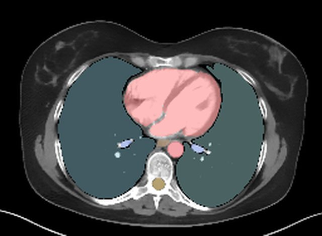
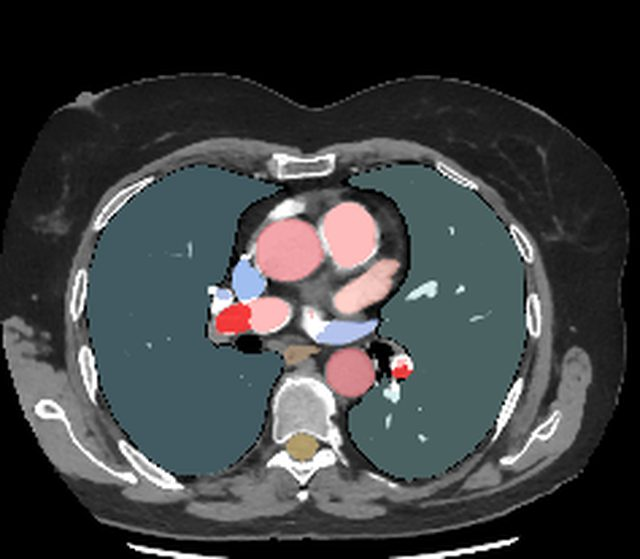

BT atlası
Önce bölgeyi seçin, sonra vakayı açın. Normal ve patolojik vakalar aynı listede; filtreyle ayırın.
Bölge
Tür
Vakalar yükleniyor…
Patoloji vakalarında lezyon işaretlemeleri yalnızca açık lisanslı, uzman onaylı verilerden alınır. Hazır olmayan vakalar "Hazırlanıyor" olarak gösterilir.
Normal ile patolojiyi yan yana görün


NORMALPULMONER EMBOLİKesitler farklı hastalara ve farklı fazlara aittir; yalnızca toraks düzeyinde görsel karşılaştırma içindir.
Atlasta neler yapabilirsiniz?
Üç düzlemde gezinAksiyel, koronal ve sagittal kesitler; kaydırma, yakınlaştırma ve taşıma. Telefonda dokunmatik hareketlerle.
Yapıya dokununDokunduğunuz yapının adı, hacmi ve (notu olanlar için) komşulukları ile BT'deki görünümü bilgi kartında.
TR · EN · LAYapı adlarını Türkçe, İngilizce veya Latince görün; arama üç dilde de çalışır.
Kendinizi test edinVurgulanan yapıyı bulun. Yanlış yaptıklarınız daha sık sorulur; 20 soruluk sınav modu vardır.
Yapı ağacıSistem, alt grup ve yapı düzeyinde göster/gizle: omurlar, kaburgalar, damarlar tek tek açılıp kapanır.
Bağlantıyla paylaşınBulunduğunuz kesit, seçili yapı ve açık sistemler tek bir bağlantıda; derse veya gruba gönderin.